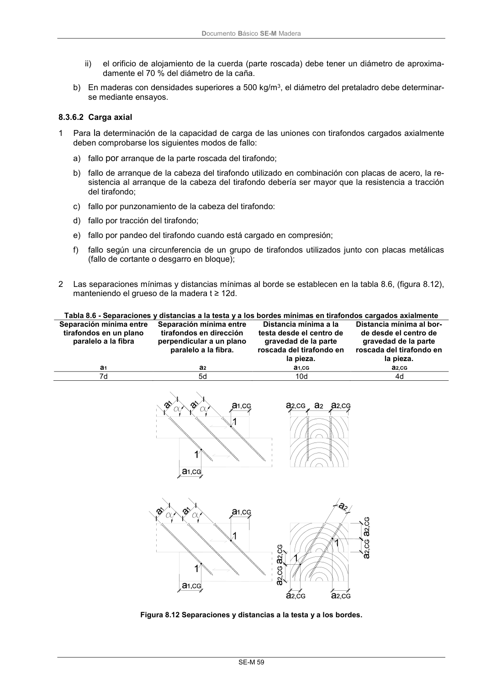
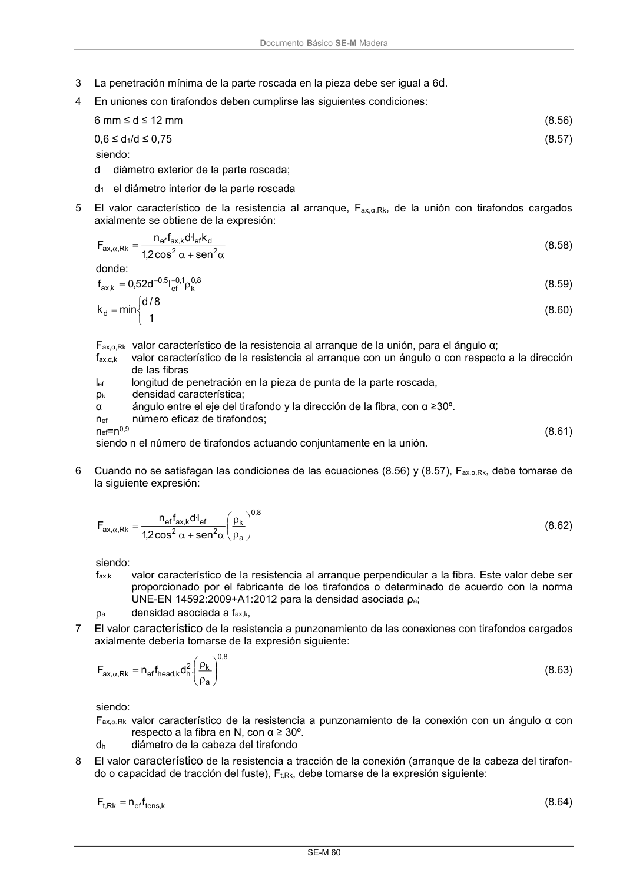
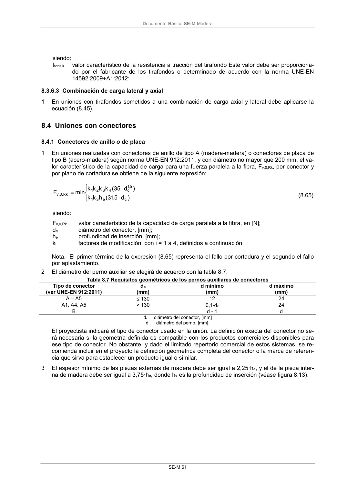

DB-SE-M · Fragmento de PDF p64 · versión 2019-12-20 · capa oficial
Formatos: JSON compacto · Markdown · PDF fuente
Ámbito del documento · texto del ámbito · documento y tablas
ID técnico a0126 · PDF pág. 64-67 · jerarquía no validada por persona · no es capítulo: sin_linea_de_encabezado · padre: raíz · literal original en el contenido: «8.3.6 Tirafondos 8.3.6.1 Carga lateral»
8.3.6 Tirafondos 8.3.6.1 Carga lateral 8.3.6.1 Carga lateral 1 En el cálculo de la capacidad de carga el efecto de la parte roscada del tirafondo se tendrá en cuenta utilizando un diámetro eficaz def. 2 Bajo el supuesto de que existe una garantía de contacto íntimo entre las piezas unidas, se aplican las siguientes consideraciones: a) En tirafondos con la caña lisa (zona no roscada), cuyo diámetro en la parte roscada es igual al de la caña, se aplican las reglas definidas en el apartado 8.3.1, siempre que: i) el diámetro eficaz, def, se tome como el diámetro de la caña; ii) la penetración en la pieza de punta de la caña no es inferior a 4d. b) En otros casos, se aplican las reglas definidas en el apartado 8.3.1, siempre que el diámetro efi- caz, def, se tome igual a (1,1) veces el diámetro interno de la cuerda (o parte roscada). 3 En tirafondos con caña lisa con diámetro d>6 mm, se aplicarán las reglas definidas en el apartado 8.3.4.1 (carga lateral en pernos). En otros diámetros se aplican las reglas definidas en el apartado 8.3.2.1 (carga lateral en clavos). 4 Disposiciones constructivas. a) En tirafondos colocados en coníferas con un diámetro de la caña menor que 6 mm, no se requie- re pretaladro. En todos los tirafondos colocados en frondosas, o coníferas con diámetro de la ca- ña d 6 mm, se requiere un pretaladro, con los requisitos siguientes: i) el orificio de alojamiento de la caña tendrá el mismo diámetro que la caña y la misma profun- didad que la longitud de la parte no roscada; DocumentoBásico SE-M Madera SE-M 59 ii) el orificio de alojamiento de la cuerda (parte roscada) debe tener un diámetro de aproxima- damente el 70 % del diámetro de la caña. b) En maderas con densidades superiores a 500 kg/m3, el diámetro del pretaladro debe determinar- se mediante ensayos. 8.3.6.2 Carga axial 1 Para la determinación de la capacidad de carga de las uniones con tirafondos cargados axialmente deben comprobarse los siguientes modos de fallo: a) fallo por arranque de la parte roscada del tirafondo; b) fallo de arranque de la cabeza del tirafondo utilizado en combinación con placas de acero, la re- sistencia al arranque de la cabeza del tirafondo debería ser mayor que la resistencia a tracción del tirafondo; c) fallo por punzonamiento de la cabeza del tirafondo: d) fallo por tracción del tirafondo; e) fallo por pandeo del tirafondo cuando está cargado en compresión; f) fallo según una circunferencia de un grupo de tirafondos utilizados junto con placas metálicas (fallo de cortante o desgarro en bloque); 2 Las separaciones mínimas y distancias mínimas al borde se establecen en la tabla 8.6, (figura 8.12), manteniendo el grueso de la madera t ≥ 12d. Tabla 8.6 - Separaciones y distancias a la testa y a los bordes mínimas en tirafondos cargados axialmente Separación mínima entre tirafondos en un plano paralelo a la fibra Separación mínima entre tirafondos en dirección perpendicular a un plano paralelo a la fibra. Distancia mínima a la testa desde el centro de gravedad de la parte roscada del tirafondo en la pieza. Distancia mínima al bor- de desde el centro de gravedad de la parte roscada del tirafondo en la pieza. a1 a2 a1,CG a2,CG 7d 5d 10d 4d Figura 8.12 Separaciones y distancias a la testa y a los bordes. DocumentoBásico SE-M Madera SE-M 60 3 La penetración mínima de la parte roscada en la pieza debe ser igual a 6d. 4 En uniones con tirafondos deben cumplirse las siguientes condiciones: 6 mm ≤ d ≤ 12 mm (8.56) 0,6 ≤ d1/d ≤ 0,75 (8.57) siendo: d diámetro exterior de la parte roscada; d1 el diámetro interior de la parte roscada 5 El valor característico de la resistencia al arranque, Fax,α,Rk, de la unión con tirafondos cargados axialmente se obtiene de la expresión: 2 2 d ef k, ax ef Rk , , ax sen cos 2,1 k l· d f n F (8.58) donde: 8 , 0 k 1, 0 ef 5 , 0 k, ax l d 52 ,0 f (8.59) 1 8 / d min kd (8.60) Fax,α,Rk valor característico de la resistencia al arranque de la unión, para el ángulo α; fax,α,k valor característico de la resistencia al arranque con un ángulo α con respecto a la dirección de las fibras lef longitud de penetración en la pieza de punta de la parte roscada, ρk densidad característica; α ángulo entre el eje del tirafondo y la dirección de la fibra, con α ≥30º. nef número eficaz de tirafondos; nef=n0,9 (8.61) siendo n el número de tirafondos actuando conjuntamente en la unión. 6 Cuando no se satisfagan las condiciones de las ecuaciones (8.56) y (8.57), Fax,α,Rk, debe tomarse de la siguiente expresión: 8, 0 a k 2 2 ef k, ax ef Rk , , ax sen cos 2,1 l·d f n F (8.62) siendo: fax,k valor característico de la resistencia al arranque perpendicular a la fibra. Este valor debe ser proporcionado por el fabricante de los tirafondos o determinado de acuerdo con la norma UNE-EN 14592:2009+A1:2012 para la densidad asociada ρa; a densidad asociada a fax,k, 7 El valor característico de la resistencia a punzonamiento de las conexiones con tirafondos cargados axialmente debería tomarse de la expresión siguiente: 8 , 0 a k 2 h k, head ef Rk , , ax . d f n F (8.63) siendo: Fax,,Rk valor característico de la resistencia a punzonamiento de la conexión con un ángulo α con respecto a la fibra en N, con α ≥ 30º. dh diámetro de la cabeza del tirafondo 8 El valor característico de la resistencia a tracción de la conexión (arranque de la cabeza del tirafon- do o capacidad de tracción del fuste), Ft,Rk, debe tomarse de la expresión siguiente: k, tens ef Rk ,t f n F (8.64) DocumentoBásico SE-M Madera SE-M 61 siendo: ftens,k valor característico de la resistencia a tracción del tirafondo Este valor debe ser proporciona- do por el fabricante de los tirafondos o determinado de acuerdo con la norma UNE-EN 14592:2009+A1:2012;



PDF fuente redistribuible: copia fiel enlazada en esta página (SHA256 verificado).